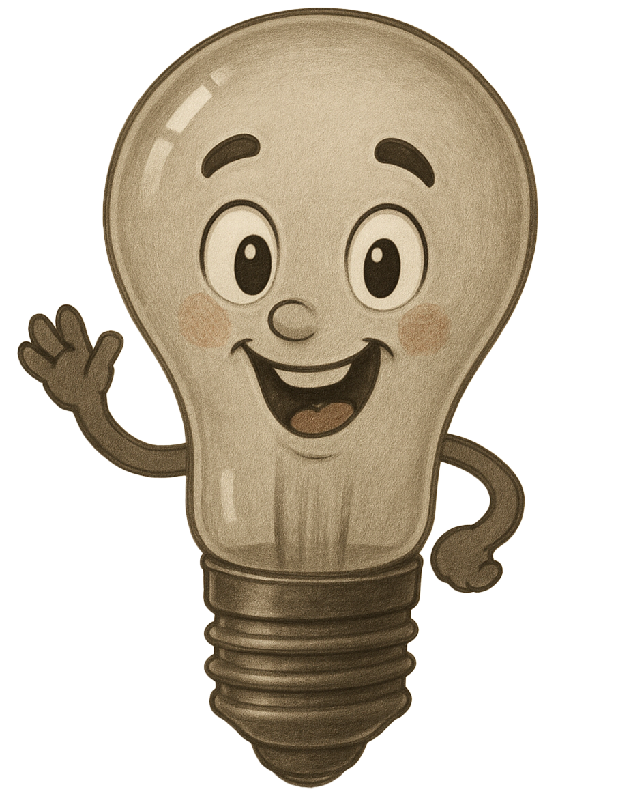

De lamp is uit
Je ziet hier een batterij, drie schakelaars en een lamp. De schakelaars zijn in serie geschakeld. Bij een serie schakeling wordt gebruik gemaakt van een logische "en" operator. De lampen kunnen alleen aan gaan als en schakelaar 1 en schakelaar 2 en schakelaar 3 aan staan.
Kun je de code zo aanpassen dat de lamp aan gaat als alle drie de schakelaars aan staan?